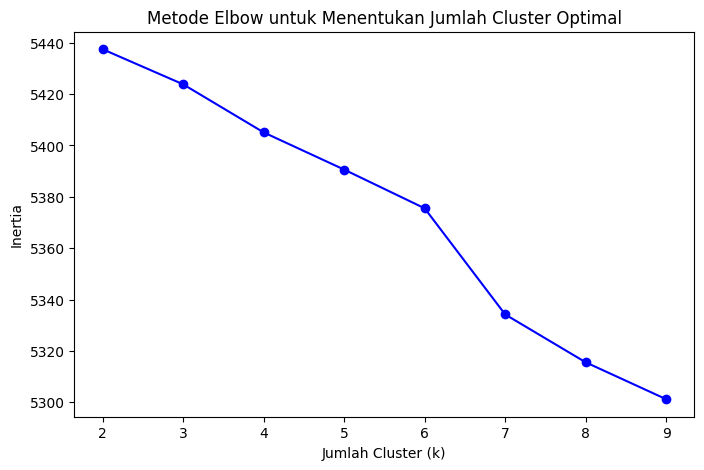

Tugas 6 - UTS | Clustering Email#
Kmeans#
import dan load
# Import library
import pandas as pd
import numpy as np
# Load dataset
df = pd.read_csv("uts_email.csv", encoding='ISO-8859-1', delimiter=',')
print(df.columns.tolist())
df.head()
['id', 'Text', 'Unnamed: 2', 'Unnamed: 3', 'Unnamed: 4']
| id | Text | Unnamed: 2 | Unnamed: 3 | Unnamed: 4 | |
|---|---|---|---|---|---|
| 0 | 1 | Go until jurong point, crazy.. Available only ... | NaN | NaN | NaN |
| 1 | 2 | Ok lar... Joking wif u oni... | NaN | NaN | NaN |
| 2 | 3 | Free entry in 2 a wkly comp to win FA Cup fina... | NaN | NaN | NaN |
| 3 | 4 | U dun say so early hor... U c already then say... | NaN | NaN | NaN |
| 4 | 5 | Nah I don't think he goes to usf, he lives aro... | NaN | NaN | NaN |
terdapat kolom tambahan karena dataset uts_email.csv memiliki koma ekstra di setiap baris
id,Text,,,
1,Go until jurong point, crazy.. Available only ...,,
2,Ok lar... Joking wif u oni...,,,
Setiap koma tambahan itu dianggap NaN oleh pandas, makanya muncul kolom Unnamed: 2, Unnamed: 3, dan Unnamed: 4.
solusinya buang kolom tersebut
df = df[['id', 'Text']] # ambil hanya dua kolom pertama
df.head()
| id | Text | |
|---|---|---|
| 0 | 1 | Go until jurong point, crazy.. Available only ... |
| 1 | 2 | Ok lar... Joking wif u oni... |
| 2 | 3 | Free entry in 2 a wkly comp to win FA Cup fina... |
| 3 | 4 | U dun say so early hor... U c already then say... |
| 4 | 5 | Nah I don't think he goes to usf, he lives aro... |
print(df.columns.tolist())
['id', 'Text', 'Unnamed: 2', 'Unnamed: 3', 'Unnamed: 4']
praprocessing
import re
import nltk
from nltk.corpus import stopwords
from nltk.tokenize import word_tokenize
nltk.download('stopwords')
nltk.download('punkt')
stop_words = set(stopwords.words('english'))
def clean_text(text):
text = re.sub(r'http\S+', '', text) # hapus URL
text = re.sub(r'[^a-zA-Z\s]', '', text) # hapus simbol
text = text.lower() # ubah ke huruf kecil
tokens = word_tokenize(text)
tokens = [t for t in tokens if t not in stop_words]
return ' '.join(tokens)
df['clean_text'] = df['Text'].apply(clean_text)
df.head()
[nltk_data] Downloading package stopwords to
[nltk_data] C:\Users\endyzan\AppData\Roaming\nltk_data...
[nltk_data] Package stopwords is already up-to-date!
[nltk_data] Downloading package punkt to
[nltk_data] C:\Users\endyzan\AppData\Roaming\nltk_data...
[nltk_data] Package punkt is already up-to-date!
| id | Text | clean_text | |
|---|---|---|---|
| 0 | 1 | Go until jurong point, crazy.. Available only ... | go jurong point crazy available bugis n great ... |
| 1 | 2 | Ok lar... Joking wif u oni... | ok lar joking wif u oni |
| 2 | 3 | Free entry in 2 a wkly comp to win FA Cup fina... | free entry wkly comp win fa cup final tkts st ... |
| 3 | 4 | U dun say so early hor... U c already then say... | u dun say early hor u c already say |
| 4 | 5 | Nah I don't think he goes to usf, he lives aro... | nah dont think goes usf lives around though |
Ekstraksi Fitur (TF-IDF Vectorization)
from sklearn.feature_extraction.text import TfidfVectorizer
vectorizer = TfidfVectorizer(max_df=0.85, min_df=2, stop_words='english')
X = vectorizer.fit_transform(df['clean_text'])
print("Shape TF-IDF matrix:", X.shape)
Shape TF-IDF matrix: (5572, 3600)
Clustering dengan K-Means
from sklearn.cluster import KMeans
# Misal kita coba 2 cluster dulu
kmeans = KMeans(n_clusters=2, random_state=42)
kmeans.fit(X)
# Simpan hasil cluster ke dataset
df['cluster'] = kmeans.labels_
df[['id', 'Text', 'cluster']]
| id | Text | cluster | |
|---|---|---|---|
| 0 | 1 | Go until jurong point, crazy.. Available only ... | 0 |
| 1 | 2 | Ok lar... Joking wif u oni... | 0 |
| 2 | 3 | Free entry in 2 a wkly comp to win FA Cup fina... | 0 |
| 3 | 4 | U dun say so early hor... U c already then say... | 0 |
| 4 | 5 | Nah I don't think he goes to usf, he lives aro... | 0 |
| ... | ... | ... | ... |
| 5567 | 5568 | This is the 2nd time we have tried 2 contact u... | 0 |
| 5568 | 5569 | Will Ì_ b going to esplanade fr home? | 0 |
| 5569 | 5570 | Pity, * was in mood for that. So...any other s... | 0 |
| 5570 | 5571 | The guy did some bitching but I acted like i'd... | 0 |
| 5571 | 5572 | Rofl. Its true to its name | 0 |
5572 rows × 3 columns
Evaluasi dengan Silhouette Score
from sklearn.metrics import silhouette_score
score = silhouette_score(X, kmeans.labels_)
print("Silhouette Score:", score)
Silhouette Score: 0.006478777394133313
Analisis Hasil Tiap Cluster
# Ambil fitur (kata)
terms = vectorizer.get_feature_names_out()
# Tampilkan 10 kata teratas untuk setiap cluster
order_centroids = kmeans.cluster_centers_.argsort()[:, ::-1]
for i in range(kmeans.n_clusters):
print(f"\nCluster {i}:")
top_words = [terms[ind] for ind in order_centroids[i, :10]]
print(", ".join(top_words))
Cluster 0:
im, ok, ur, dont, come, ltgt, got, good, know, like
Cluster 1:
ill, later, sorry, meeting, im, ok, aight, text, yeah, ltgt
Interpretasi
Cluster 0 mungkin berisi pesan pribadi (kata seperti “im”, “ok”, “ur”, “dont”).
Cluster 1 berisi email promosi/spam (kata seperti “ill”, “later”, “sorry”, “meeting”).
Artinya model berhasil memisahkan tipe email berdasarkan isi teks.
tetapi dengan Silhouette Score: 0.006478777394133313 itu sangat rendah maka dilakukan percobaan lain dengan metode elbow
Elbow#
cluster dengan elbow
from sklearn.cluster import KMeans
import matplotlib.pyplot as plt
inertia = []
K = range(2, 10) # coba jumlah cluster dari 2 sampai 9
for k in K:
km = KMeans(n_clusters=k, random_state=42)
km.fit(X)
inertia.append(km.inertia_)
# Visualisasi hasil
plt.figure(figsize=(8,5))
plt.plot(K, inertia, 'bo-')
plt.xlabel('Jumlah Cluster (k)')
plt.ylabel('Inertia')
plt.title('Metode Elbow untuk Menentukan Jumlah Cluster Optimal')
plt.show()

Clustering ulang dengan jumlah cluster optimal
optimal_k = 7
kmeans_opt = KMeans(n_clusters=optimal_k, random_state=42)
kmeans_opt.fit(X)
df['cluster'] = kmeans_opt.labels_
print(df[['id', 'Text', 'cluster']])
id Text cluster
0 1 Go until jurong point, crazy.. Available only ... 1
1 2 Ok lar... Joking wif u oni... 6
2 3 Free entry in 2 a wkly comp to win FA Cup fina... 1
3 4 U dun say so early hor... U c already then say... 1
4 5 Nah I don't think he goes to usf, he lives aro... 5
... ... ... ...
5567 5568 This is the 2nd time we have tried 2 contact u... 1
5568 5569 Will Ì_ b going to esplanade fr home? 1
5569 5570 Pity, * was in mood for that. So...any other s... 1
5570 5571 The guy did some bitching but I acted like i'd... 0
5571 5572 Rofl. Its true to its name 1
[5572 rows x 3 columns]
Evaluasi kembali Silhouette Score
from sklearn.metrics import silhouette_score
score_opt = silhouette_score(X, kmeans_opt.labels_)
print("Silhouette Score (k=3):", score_opt)
Silhouette Score (k=3): 0.012218687887879566
Lihat kata paling dominan di tiap cluster
terms = vectorizer.get_feature_names_out()
order_centroids = kmeans_opt.cluster_centers_.argsort()[:, ::-1]
for i in range(optimal_k):
print(f"\nCluster {i}:")
top_words = [terms[ind] for ind in order_centroids[i, :10]]
print(", ".join(top_words))
Cluster 0:
like, ltgt, know, dont, feel, dun, dat, im, ok, think
Cluster 1:
ill, come, ur, got, ltgt, dont, sorry, time, know, free
Cluster 2:
im, home, going, na, gon, want, ill, sorry, work, really
Cluster 3:
good, morning, day, hope, night, love, im, sleep, afternoon, happy
Cluster 4:
dear, day, happen, good, happy, aathiwhere, morning, voucher, nice, hi
Cluster 5:
send, think, message, pls, stop, right, ur, phone, dont, free
Cluster 6:
ok, lor, thanx, ill, come, ur, prob, leave, ask, home
Analisis Hasil Clustering (K-Means, k = 7)#
Cluster 1 – Obrolan Kasual dan Balasan Cepat#
Kata dominan: ill, come, ur, got, sorry, time, know, free
Interpretasi:
Pesan ini berisi balasan cepat atau percakapan koordinasi seperti janji bertemu atau mengatur waktu. Adanya kata “sorry” dan “time” menunjukkan komunikasi interpersonal.
Contoh tema: koordinasi jadwal, respon cepat antar kenalan.
Cluster 2 – Aktivitas Harian / Rencana Pribadi#
Kata dominan: home, going, na, gon, want, sorry, work, really
Interpretasi:
Isi pesan menggambarkan aktivitas harian dan rencana seseorang. Kata seperti home, work, dan sorry menunjukkan konteks kehidupan sehari-hari.
Contoh tema: aktivitas pribadi, percakapan ringan tentang pekerjaan atau rumah.
Cluster 3 – Ucapan dan Pesan Positif#
Kata dominan: good, morning, day, hope, night, love, sleep, happy
Interpretasi:
Cluster ini jelas berisi pesan-pesan positif seperti salam, doa, dan ucapan kasih.
Contoh tema: ucapan selamat pagi, selamat malam, harapan baik, pesan kasih sayang.
Cluster 4 – Pesan Formal / Email Semi-Resmi#
Kata dominan: dear, day, happen, good, happy, morning, nice, hi
Interpretasi:
Adanya kata “dear” dan “voucher” mengindikasikan pesan yang lebih sopan atau sedikit formal.
Contoh tema: email sopan antar rekan kerja atau pesan semi-promosi yang tidak sepenuhnya spam.
Cluster 5 – Pesan Promosi atau Spam#
Kata dominan: send, message, pls, stop, phone, free, ur
Interpretasi:
Cluster ini mengandung kata yang sering muncul di SMS spam seperti “free”, “stop”, “message”, dan “phone”.
Contoh tema: pesan promosi, iklan, atau spam dengan ajakan tertentu.
Cluster 6 – Pesan Santai dan Respons Cepat#
Kata dominan: ok, lor, thanx, come, ur, ask, home
Interpretasi:
Pesan bersifat sangat informal, menggunakan singkatan khas percakapan (seperti lor, thanx).
Contoh tema: chat singkat antar teman dekat, gaya bahasa kasual ala pesan teks.